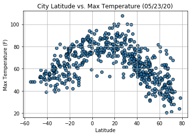

 This project looked at latitude data against different aspects of climate to see if there were correlations between them. You will be able to look at different visualizations and draw conclusions from the graphs. After assembling rhe dataset, we used Matplotlib to plot various aspects of the weather vs. latitude. Factors we looked at included temperature, cloudiness, wind speed, and humidity. This site provides the source data and visualizations created as part of the anaysis, as well as explanations and descriptions of any trends and correlations witnessed.